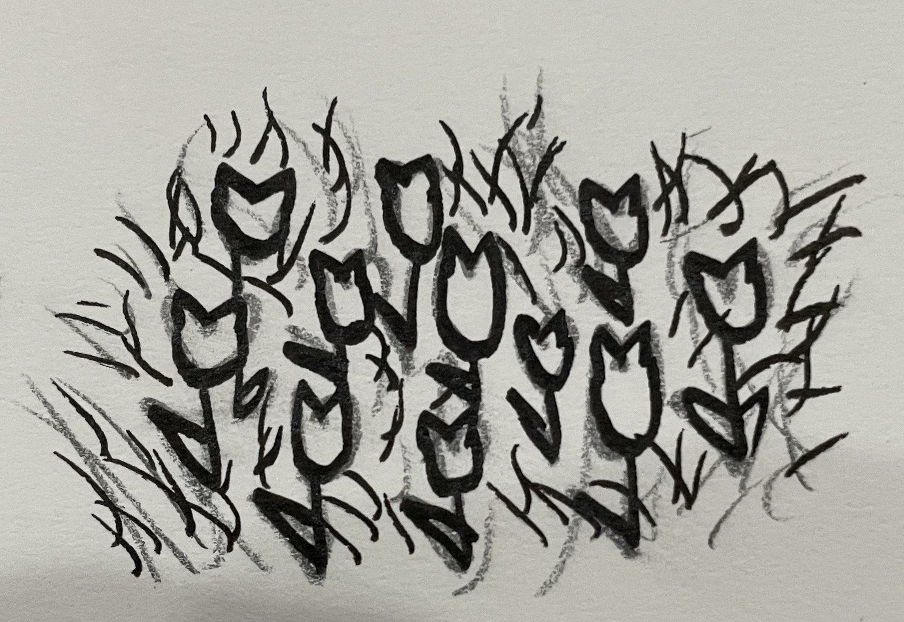
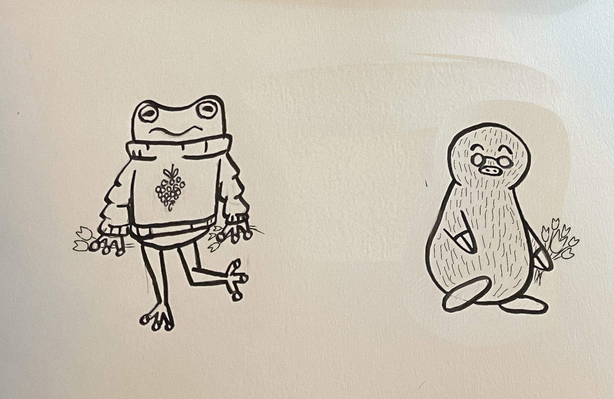

On the way back to town, Milo and Flora end up stumbling upon a huge field of tulips. "Wow!" Flora exclaims. "These would be even better to bring back!" Milo nods in agreement. "They would make nice garnishes!" He says.
The two each gather up some tulips for themselves, making sure they have plenty. They then decide to part ways, heading back to their own shops.
 Page 6.